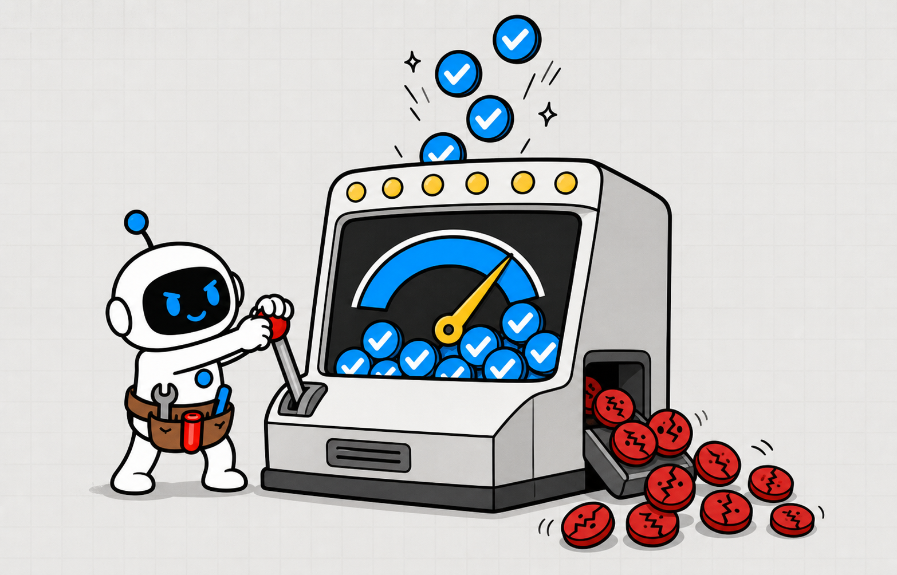

Do you know why an AI Agent guesses instead of saying I don't know?
Why guess?


OpenAI: accuracy can reward AI Agent guessing

OPENAI Guessing can beat abstaining
Guessing can beat abstaining
Guessing can beat abstaining
A fluent AI Agent can still be wrong
Plausible is not verified


Use an AI Agent fact-check checklist

≠

Answer · Verify · ClarifyAbstain
Confidence must earn the action

Know · Infer · Unknown
Practical, high-value AI Agent methods
PRACTICAL AI AGENT METHODGet better at using AIFOLLOW + SAVE
Chapter 2
Guessing Incentives
See why accuracy can reward thewrong behavior

Pretraining sees fluent statements


No truth labelon every claim

Rare facts have weak patterns

Missing truth invites a guess
Accuracy-only scoring rewards guesses
Right earns creditUnknown earns none

A lucky guess can hide a falsehood


One chance canstill score
Similar accuracy can hide very different errors

≠

Accuracy · ErrorAbstention
Price confident errors above uncertainty
Reward honest limits
1.Fluency does not prove truth
2.Accuracy can reward luck
3.Error cost belongs in the score
1.Fluency does not prove truth
2.Accuracy can reward luck
3.Error cost belongs in the score
1.Fluency does not prove truth
2.Accuracy can reward luck
3.Error cost belongs in the score
Chapter 3
Answerability
Decide whether a reliableanswer is possible
Test four answerability conditions

SpecificAvailableFreshVerifiable
Missing context needs clarification

Ask whatchanges theanswer
Live facts require live evidence
No access means unknown
Ambiguity is not hidden intent

≠
Offer the smallest usefulchoice
Raise the evidence bar with risk

Brainstorming is notexecution
A justified unknown is a valid result
Protect the user


1.Test answerability
2.Ask for missing context
3.Accept a justified unknown
1.Test answerability
2.Ask for missing context
3.Accept a justified unknown
1.Test answerability
2.Ask for missing context
3.Accept a justified unknown
Chapter 4
Express Uncertainty
Make facts, inferences, andunknowns visible
Separate facts from inference

Confirmed · Inferred · Unknown
Use explicit evidence states

≠

Supported but incomplete
Fluent wording is not confidence
Evidence coverage setsconfidence
Avoid false numeric precision

Do not invent percentages
Attach evidence to each claim

Narrow claimsto the proof
Give every unknown a next action


VerifyClarifyCheck · Stop
1.Separate claim states
2.Follow evidence coverage
3.Resolve unknowns with action
1.Separate claim states
2.Follow evidence coverage
3.Resolve unknowns with action
1.Separate claim states
2.Follow evidence coverage
3.Resolve unknowns with action
Chapter 5
Verify High-Risk Facts
Spend evidence effort whereerrors have consequences
Start with consequence

Money · Access · Safety · LawReputation
Use the source closest to the fact
State · Policy · PaperArtifact
Corroborate with independent evidence

Repeatedclaims are notindependent
Match evidence to the exact claim
Do not stretch the citation
Check date, scope, entity, and units

True factWrong context
Approve irreversible action

≠
Human authorizationrequired
1.Verify by consequence
2.Use primary and independent evidence
3.Gate irreversible action
1.Verify by consequence
2.Use primary and independent evidence
3.Gate irreversible action
1.Verify by consequence
2.Use primary and independent evidence
3.Gate irreversible action
Chapter 6
Fact-Check Checklist
Apply one reusable AI Agentverification tool
Step 1: Answerability
QuestionEntity · TimeToolsMissing
Step 2: Claim Inventory

≠

Confirmed · InferredUnknown
Step 3: Evidence Standard

Primary · Fresh · Independent
Step 4: Verification
Open · Match · ScopeRecord
Step 5: Action Risk
Automatic · Clarify · ApproveStop
Step 6: Feedback Test
Turn failures into tests
1.Test answerability and claims
2.Define and verify evidence
3.Connect uncertainty to action
1.Test answerability and claims
2.Define and verify evidence
3.Connect uncertainty to action
1.Test answerability and claims
2.Define and verify evidence
3.Connect uncertainty to action
AI Agent guessing is an incentive problem
Rewarded answerPenalized unknown
First, test answerability
Can this beknown now?
Second, separate claim states
Confirmed · Inferred · Unknown
Third, verify high-risk facts
≠
Direct + independentevidence
Use the AI Agent fact-check checklist
Evidence barAction gateFuture test

Make confidence earn the decision
Evidence before action
OpenAI research gives a clear answer: standard training and evaluation often
reward a lucky guess more than an honest expression of uncertainty.
That incentive can turn a plausible sentence into a wrong decision, a false
citation, or an unsafe action.
You need a way to separate what the AI Agent knows, infers, and cannot
This video builds an AI Agent Uncertainty and Fact-Check Checklist.
verify.
It helps you test answerability, set an evidence bar, and decide whether to
answer, verify, clarify, or abstain.
The core idea is simple: do not ask only whether an answer sounds right.
Ask whether the question is answerable, which claims carry risk, and what
evidence would change the action.
This video is packed with practical, high-value insights to help you get
better at using AI.
It's a longer one, so follow Tiny Agent and save it so you don't lose it.
Start with the incentive.
This chapter shows why a fluent AI Agent can be rewarded for guessing even
when it lacks the fact.
During pretraining, a language model learns patterns from large collections
It sees fluent statements, but those statements do not arrive with a
of text.
reliable true-or-false label attached to every claim.
Frequent structured facts are easier to learn.
Rare arbitrary facts, such as an obscure birthday or document title, may
have no useful pattern that lets the model reconstruct the missing truth.
Post-training should reduce these errors, but many evaluations still score
only exact accuracy.
A correct guess earns a point, while “I don't know” receives nothing.
If a model guesses a birthday, it has a one-in-three-hundred-and-sixty-five
chance of being right.
Abstaining guarantees no accuracy point, even though it avoids a confident
falsehood.
OpenAI's SimpleQA example makes the trade-off visible.
One model reached twenty-two percent accuracy with twenty-six percent errors
and fifty-two percent abstentions;
another reached twenty-four percent accuracy but seventy-five percent errors
and almost never abstained.
So accuracy alone hides the cost of failure.
A reliable AI Agent score should penalize confident errors more than honest
uncertainty and reward appropriate clarification or abstention.
Chapter recap.
First, fluent generation does not attach a truth label to every claim.
Second, accuracy-only scoring rewards lucky guesses.
Third, reliable evaluation must price confident errors above uncertainty.
Before checking an answer, check the question.
This chapter helps the AI Agent decide whether a reliable answer is possible
with the available information.
Ask four things: is the request specific, is the required information
available, is the fact stable enough to answer from memory, and can the
result be checked before action?
A missing date, unclear entity, or ambiguous term is not a reasoning
challenge.
It is a clarification problem, and the AI Agent should ask for the detail
that changes the answer.
Current prices, laws, schedules, account state, and private records are
answerable only through live or authorized evidence.
Without that access, the correct state is unknown.
Some questions are inherently underdetermined.
If several answers fit the prompt, the Agent should state the ambiguity and
offer the smallest useful choice instead of inventing hidden intent.
For a low-risk brainstorming prompt, an approximate answer may be useful.
For a factual claim that will drive money, health, access, or publication,
the evidence bar must be much higher.
Abstention is not a failure when the requested truth cannot be determined.
It is a controlled result that protects the user and tells the system what
information or tool is missing.
Chapter recap.
First, test specificity, availability, freshness, and verifiability.
Second, turn missing context into a clarification request.
Third, treat a justified unknown as a valid controlled outcome.
Once the question is answerable, make uncertainty visible.
This chapter turns one polished response into facts, inferences, and
unknowns the viewer can inspect.
Mark direct facts as facts only when the Agent has supporting evidence.
Mark conclusions as inferences when they combine evidence with assumptions
or judgment.
Use explicit language such as “confirmed,” “supported but incomplete,”
“inferred,” or “unknown.
Avoid vague hedges that sound cautious without telling the user what is
Confidence should follow evidence coverage, not the smoothness of the prose.
missing.
A beautiful answer based on one weak source remains weak;
a short answer with direct records may be strong.
Do not invent precise confidence percentages unless the system is actually
calibrated for that task.
A number like eighty-seven percent can create false precision and hide the
real evidence gap.
Attach each important claim to the evidence that supports it.
If the evidence covers only part of the claim, narrow the claim instead of
stretching the citation.
End uncertainty with an action: verify one source, request one missing
field, run one check, or stop the high-risk action.
The user should know what would resolve the unknown.
Chapter recap.
First, separate confirmed facts, inferences, and unknowns.
Second, base confidence on evidence coverage, not fluent wording.
Third, pair every important unknown with a next action.
Not every sentence deserves the same effort.
This chapter shows where the AI Agent must spend verification time before a
claim becomes an action.
Start with consequence.
Verify claims that can move money, change access, affect safety, create
legal exposure, damage a reputation, or become difficult to reverse.
Prefer the primary source closest to the fact: the database for account
state, the official policy for a rule, the original paper for a result, and
the actual artifact for work completion.
Then seek independent corroboration when one source can be stale, biased,
incomplete, or misread.
Two pages repeating the same unsupported statement are not two independent
Match evidence to the exact claim.
sources.
A source that proves a product exists does not prove it has a specific
feature, and a study in one controlled setting does not prove the same
result everywhere.
Check date, scope, entity, units, and exceptions.
Many confident errors come from a true fact attached to the wrong time,
person, market, or condition.
Finally, place a human approval gate before irreversible action.
The Agent can collect evidence and propose a decision, but high-impact
execution needs explicit authorization.
Chapter recap.
First, spend verification effort according to consequence.
Second, use primary evidence and independent corroboration.
Third, require human approval before irreversible action.
Now combine the method into one reusable AI Agent Uncertainty and Fact-Check
Checklist you can use before accepting a factual answer.
Step one is Answerability.
Record the exact question, entity, time range, required freshness, available
tools, and the missing detail that would block a reliable answer.
Step two is Claim Inventory.
Split the response into consequential claims and label each one confirmed,
inferred, or unknown.
Ignore harmless style choices and focus on statements that can change a
Step three is Evidence Standard.
decision.
For each important claim, name the acceptable primary source, the freshness
limit, and whether independent corroboration is required.
Step four is Verification.
Open the evidence, match it to the claim, check scope and exceptions, and
record the result.
A citation is useful only when it supports the words you plan to rely on.
Step five is Action Risk.
Decide whether the result may proceed automatically, needs clarification,
requires human approval, or must stop because evidence is missing.
Step six is Feedback.
Save the failed claim, missing tool, or misleading score as a future test so
the AI Agent and its evaluation improve together.
Chapter recap.
First, test answerability and inventory consequential claims.
Second, define and verify the evidence standard.
Third, connect uncertainty to an action gate and a future test.
AI Agent hallucinations are not only a mysterious glitch.
They arise when uncertain generation meets incentives that reward an answer
more than an honest unknown.
First, check whether the question is answerable before judging the response.
Second, separate confirmed facts, inferences, and unknowns.
Third, verify high-risk claims with direct evidence and independent
corroboration.
Use the AI Agent Uncertainty and Fact-Check Checklist to set the evidence
bar, choose the action gate, and preserve failures as future tests.
The goal is not to make the AI Agent sound less confident.
It is to make confidence earn its right to drive a decision.
Follow Tiny Agent.
TINY AGENT / AI AGENT FIELD NOTE
Do you know why an AI Agent
guesses instead of saying
“I don't know”?

VOICE

Follow Tiny Agent
Tiny Agent helps youget better at using AI.